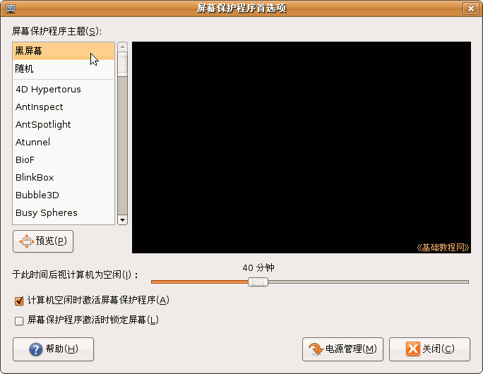
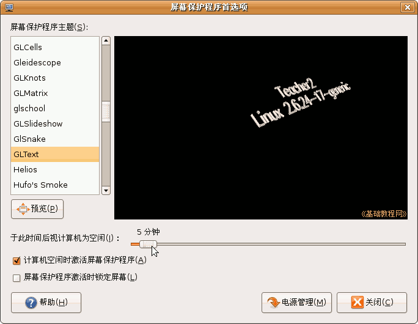
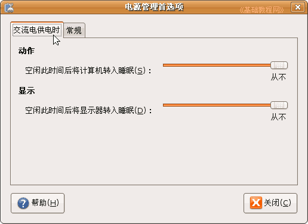
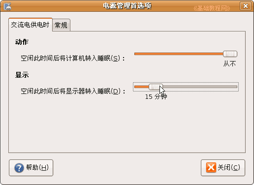
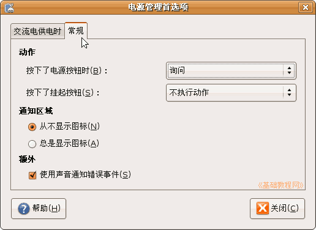

电脑操作基础
作者：TeliuTe 来源：基础教程网
十、屏保和电源 返回目录 下一课当电脑空闲时，可以设置屏幕保护程序，防止显示器长时间太亮，还可以设置电源来暂时关闭显示器，下面我们来看一个练习；
1、屏幕保护程序
1）点上面板菜单，“系统－首选项－屏幕保护程序”，出来一个对话框；
2）在左边的屏保主题中，向下拖动滚动条，找到“GLText”，把下边的时间滑块，向左拖动到5分钟；

这样就设定了一个文字屏保程序，点左边的“预览”按钮，可以看看效果，然后点右上角的“退出全屏”返回，
屏保程序别太复杂，以免启动时突然增大使用，影响电脑的性能；
2、电源管理
1）设置好屏保程序后，接着点右下角的“电源管理”按钮，出来一个面板；

2）在第二个“显示”的长条中，拖动滑块到15分钟，也就是15分钟没动作，就将显示器关闭，
如果影响了看电影等，可以拖到最右边“从不”；

3）再点上边的“常规”标签，看一下其他的设置，一般不用修改什么，如果要修改，记一下原先是什么；

4）点“关闭”按钮，就完成了电源和屏保的设置；
本节学习了在Ubuntu中设置屏保和电源管理的基本操作，如果你成功地完成了练习，请继续学习下一课内容；本教程由86团学校TeliuTe制作|著作权所有
基础教程网：http://teliute.org/
美丽的校园……
转载和引用本站内容，请保留版权信息和本站链接。